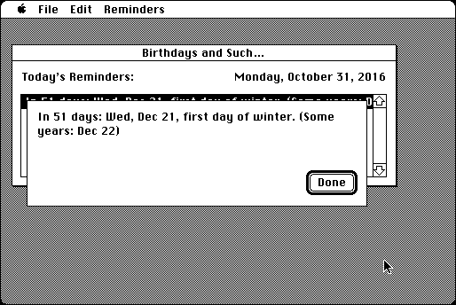

Download
birthdays-and-such.zip (184K) Birthdays and Such 1.4 repackaged into a zipped hfs disk image and checksum file. The disk image can be mounted with Mini vMac.
birthdays-and-such.hqx (299K) Birthdays and Such 1.4 in the original format.
copyright: Ron Lichty
mod date: Dec 24, 2000
license: shareware
last known url
(gone)
“Meant to be launched on daily startup, to remind you of the important birthdays and anniversaries”. Requires “system software version 6.0.4 or later”.

If you find these downloads useful, please consider helping the Gryphel Project, which hosts them.
Here are the md5 checksums for the downloads, signed with Gryphel Key 5:
--------- GRY SIGNED TEXT --------- 5424251355095806c5ccb4e201162415 birthdays-and-such.zip 014361493a18623e99531dd092ba66b9 birthdays-and-such.hqx ------- BEGIN GRY SIGNATURE ------- Gry/4Xa8CFcUzxdN/AKi1EQUmgeftRsEsQ9xqs3gnxCKsa5MWKbUMQlv7L1xdQT8 55vJqEZRimcIn9IHapnCkXnWYv7AKmqxKQStnsHlVoDD9BK6F92Z3vAiUnAYEu4Z z0qkPL97vLHbSJFmTZ5WgFC4E64Q8ObNjozTGnyEKQfb125KsMS6AK6sCAB9VgVF -------- END GRY SIGNATURE --------